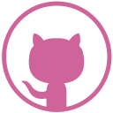

about me!
Oh, hello there! My name is Azalia Loeciano. I am a Front-End Developer based in Toronto, Canada.
Before being a Web Developer, I was a cook. Just like many other people, my career change was spurred on by the Covid-19 pandemic. While searching for possible future careers, I came across Web Development and fell in love with it. So I decided to enroll in Juno College's Web Development Immersive Bootcamp.
As a cook, I developed collaborative and problem solving skills which turn out to be really useful in Web Dev. I also love that Web Dev provides SO MANY opportunities for learning - things are never dull.
I'm also a firm believer in diversity and inclusivity, which, combined with my technical skills translates to passion in building responsive and accessible products.
When I'm not staring at the screen trying to figure out this coding thing, I like to read, cook and stare some more at the screen to watch sports games (being a Toronto sports teams' fan is also never dull 😜).
.png)
my skills and toolkit
-
.png)
HTML 5
-
CSS 3
-
.png)
SASS
-
.png)
JavaScript
-
.png)
JQuery
-
.png)
React
-
.png)
Firebase
-
.png)
Responsive Design
-
Accessible Design
-
.png)
RESTful APIs
-
Git
-

VS Code
-
Command Terminal
-

Git Hub
some of my projects
my contact
Do you want to cry over Toronto sports teams with me? Or see how random I can be? Or maybe you just want to do a virtual hang out with me? You can contact me through the form and follow (or just lurk, that's cool too) my social media links. If you want to slide straight to my inbox, you can send an e-mail to azalia.loeciano@gmail.com 😊